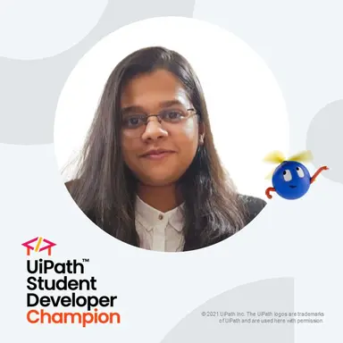
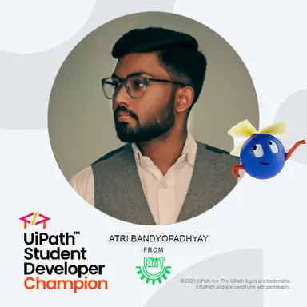

OUR STARS
Meet the outstanding Leaders of our community who are making remarkable achievements in automation and inspiring others to excel.
Saptak Das leads as the 2025–26 Champion, under whose guidance over a thousand students have gained hands-on skills in automation, AI, and real-world project execution. He is revolutionizing the campus tech culture by building an inclusive, student-first environment where curiosity becomes capability and ideas become working automation solutions.

M. Disha is the UiPath Student Champion for 2024–25, leading student engagement and innovation in automation at USC KIIT. She is passionate about AI, process intelligence, and building solutions that create real impact.

Atri Bandyopadhyay is the founding champion of USC KIIT. As a passionate advocate for automation and AI-driven innovation, he helped shape the community’s early direction and set the standards for excellence.